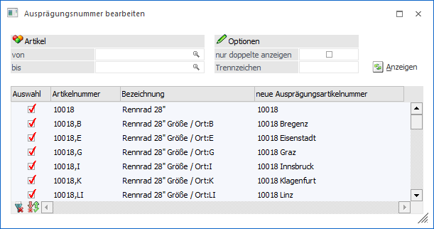
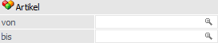
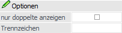
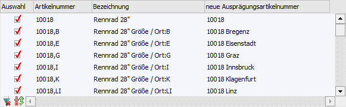
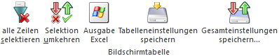
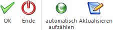

Mit Hilfe des Buttons "Bearbeiten" im Programm "Ausprägungsnummer bearbeiten" (WinLine FAKT - Stammdaten - Ausprägungen - Ausprägungsoptionen - Register "Details" - Unterregister "Anzeige") kann das Fenster "Ausprägungsnummer bearbeiten" aufgerufen werden. Hier können bestehende Ausprägungsartikelnummern manuell angepasst werden.
Hinweis
Die Hauptartikel der jeweiligen Ausprägungen werden ebenfalls zu Informationszwecken ausgewiesen. Die Eingabe einer Ausprägungsartikelnummer ist in solchen Zeilen nicht möglich!

Folgende Selektionskriterien und Einstellungen stehen zur Verfügung:
Selektion

Ø Artikel von / bis
An dieser Stelle kann eine Selektion auf die Artikelnummer vorgenommen werden.
Optionen

Ø nur doppelte anzeigen
Wenn die Option "nur doppelte anzeigen" aktiviert ist, dann werden nur Artikel mit doppelter Ausprägungsartikelnummer angezeigt.
Ø Trennzeichen
An dieser Stelle kann ein Trennzeichen für das automatische Aufzählen (siehe Button "automatisches aufzählen") hinterlegt werden.
Anzeigen

Ø Anzeigen
Durch Anwahl des Buttons "Anzeigen" wird die Tabelle "Ausprägungsartikel" gemäß der zuvor getroffenen Selektion gefüllt.
Tabelle "Ausprägungsartikel"

Nach Anwahl des Buttons "Anzeigen" wird die Tabelle mit den im Vorfeld selektierten Artikeln gefüllt, wobei nur die nur die Ausprägungsartikel des aktuellen Artikeltyps angezeigt werden. Die zugehörigen Hauptartikel werden zwar ebenfalls ausgewiesen, können aber nicht bearbeitet werden.
Ø Auswahl
Durch Anwahl der Option "Auswahl" wird gekennzeichnet, welche Zeilen bei Anwahl der Button "automatisch aufzählen" bzw. "Aktualisieren" berücksichtigt werden sollen.
Ø Artikelnummer
An dieser Stelle wird die Originalartikelnummer angezeigt.
Ø Bezeichnung
Hier wird die Bezeichnung des Artikels ausgewiesen.
Ø neue Ausprägungsartikelnummer
An dieser Stelle wird die aktuelle Ausprägungsartikelnummer angezeigt und kann editiert werden.
Tabellenbuttons

Ø alle Zeilen selektieren
Durch Anklicken des Buttons "alle Zeilen selektieren" werden alle Zeilen in der Tabelle aktiviert.
Ø Selektion umkehren
Durch Anklicken des "Selektion umkehren"-Buttons werden alle aktivierten Zeilen deaktiviert und alle deaktivierten Zeilen aktiviert.
Ø Ausgabe Excel
Durch Anwahl des Buttons "Ausgabe Excel" wird der Inhalt der Tabelle an Microsoft Excel übergeben.
Ø Tabelleneinstellungen speichern
Die Spalten einer Tabelle können grundsätzlich an beliebige Positionen verschoben, bzw. in der Breite entsprechend angepasst werden. Durch Anwahl des Buttons "Tabelleneinstellungen speichern" werden die Einstellungen benutzerspezifisch gespeichert und bei dem nächsten Aufruf des Programmpunktes wieder vorgeschlagen.
Ø Gesamteinstellungen speichern
Im Gegensatz zu "Tabelleneinstellungen speichern" können mit "Gesamteinstellungen speichern" mehrere Tabellenaufbauten gespeichert und nach Wunsch geladen werden. Zusätzlich werden Sonderfunktionen der Tabelle (z.B. "Spalte gruppieren") ebenfalls bei der Speicherung bedacht.
Buttons

Ø Ok
Durch Anklicken des Buttons "OK" bzw. der Taste F5 werden die vorgenommenen Einstellungen gespeichert.
Ø Ende
Durch Drücken des Buttons "Ende" bzw. der Taste ESC wird der Programmbereich geschlossen und alle nicht gespeicherten Änderungen verworfen.
Ø automatisch aufzählen
Durch Anwahl des Buttons "automatisch aufzählen" wird bei allen ausgewählten doppelten Ausprägungsartikelnummern (siehe Feld "Auswahl") eine (fortlaufende) Zahl angefügt.
Hinweis
Sollte dabei zwischen Ausprägungsartikelnummer und der Zahl ein Trennzeichen gewünscht werden, so kann dieses in dem Feld "Trennzeichen" hinterlegt werden.
Ø Aktualisieren
Durch Anwahl des Buttons "Aktualisieren" wird bei allen ausgewählten Artikelzeilen (siehe Feld "Auswahl") die Ausprägungsartikelnummer auf Grundlage der aktuellen Einstellung neu gesetzt.